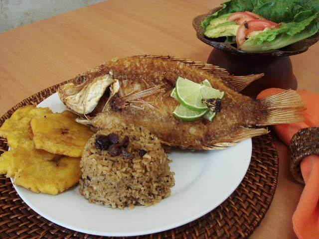

Región Caribe
Pescado frito con arroz con coco y patacones
Plato típico de la costa caribe que se encuentra principalmente en las playas costeras y restaurantes.Es una combinación perfecta entre lo dulce y lo salado, mostrando un rico equilibrio de sabores.
El color característico del arroz se debe a la panela o, en algunas preparaciones, a la gaseosa Coca - Cola.